Table of Contents
Introduction to Bayesian Optimization
Many problems in engineering, computer science, economics, etc., require to find the extremum of a real valued function. These functions are typically continuous and sometimes smooth (e.g.: Lipschitz continuous). However, those functions do not have a closed-form expression or might be multimodal, where some of the local extrema might have a bad outcome compared to the global extremum. The evaluation of those functions might be costly.
Global optimization is a special case of non-convex optimization where we want to find the global extremum of a real valued function, that is, the target function. The search is done by some pointwise evaluation of the target function.
The objective of a global optimization algorithm is to find the sequence of points
![\[ x_n \in \mathcal{A} \subset \mathbb{R}^m , \;\;\; n = 1,2,\ldots \]](form_14.png)
which converges to the point 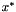, that is, the extremum of the target function, when  is large. The algorithm should be able to find that sequence at least for all functions from a given family.
is large. The algorithm should be able to find that sequence at least for all functions from a given family.
As explained in [Mockus94], this search procedure is a sequential decision making problem where point at step 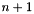 is based on decision 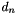 which considers all previous data:
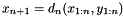
where 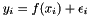. For simplicity, many works assume 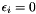, that is, function evaluations are deterministic. However, we can easily extend the description to include stochastic functions (e.g.: homoscedastic noise 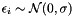).
The search method is the sequence of decisions 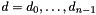, which leads to the final decision 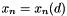. In most applications, the objective is to optimize the response of the final decisions. Then, the criteria relies on the optimality error or optimality gap, which can be expressed as:
In other applications, the objective may require to converge to in the input space. Then, we can use for example the Euclidean distance error:
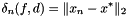
The previous equations can also be interpreted as variants of the loss function for the decision at each step. Thus, the optimal decision is defined as the function that minimizes the loss function:
![\[ d_n = \arg \min_d \delta_n(f,d) \]](form_27.png)
This requires full knowledge of function  , which is unavailable. Instead, let assume that the target function 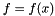 belongs to a family of functions 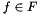, e.g.: continuous functions in 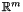. Let also assume that the function can be represented as sample from a probability distribution over functions 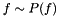. Then, the best response case analysis for the search process is defined as the decision that optimizes the expectation of the loss function:
, which is unavailable. Instead, let assume that the target function 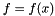 belongs to a family of functions 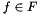, e.g.: continuous functions in 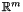. Let also assume that the function can be represented as sample from a probability distribution over functions 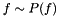. Then, the best response case analysis for the search process is defined as the decision that optimizes the expectation of the loss function:
![\[ d^{BR}_n = \arg \min_d \mathbb{E}_{P(f)} \left[ \delta_n(f,d)\right]= \arg \min_d \int_F \delta_n(f,d) \; dP(f) \]](form_33.png)
where 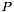 is a prior distribution over functions.
However, we can improve the equation considering that, at decision we have already observed the actual response of the function at 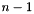 points, 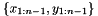. Thus, the prior information of the function can be updated with the observations and the Bayes rule:
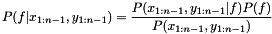
In fact, we can actually rewrite the equation to represent the updates sequentially:
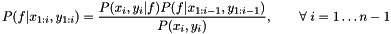
Thus, the previous equation can be rewritten as:
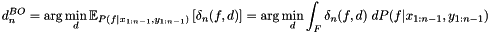
This equation is the root of Bayesian optimization, where the Bayesian part comes from the fact that we are computing the expectation with respect to the posterior distribution, also called belief, over functions. Therefore, Bayesian optimization is a memory-based optimization algorithm.
As commented before, most of the theory of Bayesian optimization is related to deterministic functions, we consider also stochastic functions, that is, we assume there might be a random error in the function output. In fact, evaluations can produce different outputs if repeated. In that case, the target function is the expected output. Furthermore, in a recent paper by [Gramacy2012] it has been shown that, even for deterministic functions, it is better to assume certain error in the observation. The main reason being that, in practice, there might be some mismodelling errors which can lead to instability of the recursion if neglected.
Bayesian optimization general model
In order to simplify the description, we are going to use a special case of Bayesian optimization model defined previously which corresponds to the most common application. In subsequent Sections we will introduce some generalizations for different applications.
Without loss of generality, consider the problem of finding the minimum of an unknown real valued function 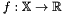, where 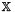 is a compact space, 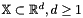. Let 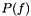 be a prior distribution over functions represented as a stochastic process, for example, a Gaussian process 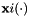, with inputs 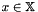 and an associate kernel or covariance function 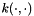. Let also assume that the target function is a sample of the stochastic process 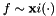.
In order to find the minimum, the algorithm has a maximum budget of  evaluations of the target function . The purpose of the algorithm is to find optimal decisions that provide a better performance at the end.
evaluations of the target function . The purpose of the algorithm is to find optimal decisions that provide a better performance at the end.
One advantage of using Gaussian processes as a prior distributions over functions is that new observations of the target function 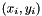 can be easily used to update the distribution over functions. Furthermore, the posterior distribution is also a Gaussian process 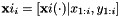. Therefore, the posterior can be used as an informative prior for the next iteration in a recursive algorithm.
In a more general setting, many authors have suggested to modify the standard zero-mean Gaussian process for different variations that include semi-parametric models [Huang06] [Handcock1993] [Jones:1998] [OHagan1992], use of hyperpriors on the parameters [MartinezCantin09AR] [Brochu:2010c] [Hoffman2011], Student t processes [Gramacy_Polson_2009] [Sacks89SS] [Williams_Santner_Notz_2000], etc.
We use a generalized linear model of the form:
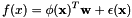
where
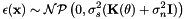
The term 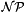 means a non-parametric process, which can make reference to a Gaussian process 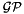 or a Student's t process 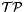. In both cases,  is the observation noise variance, sometimes called nugget, and it is problem specific. Many authors decide to fix this value 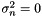 when the function 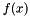 is deterministic, for example, a computer simulation. However, as cleverly pointed out in [Gramacy2012], there might be more reasons to include this term appart from being the observation noise, for example, to consider model inaccuracies.
is the observation noise variance, sometimes called nugget, and it is problem specific. Many authors decide to fix this value 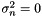 when the function 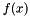 is deterministic, for example, a computer simulation. However, as cleverly pointed out in [Gramacy2012], there might be more reasons to include this term appart from being the observation noise, for example, to consider model inaccuracies.
This model has been presented in different ways depending on the field where it was used:
- As a generalized linear model 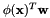 with heteroscedastic perturbation
 .
. - As a nonparametric process of the form 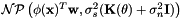.
- As a semiparametric model 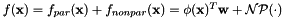
Models and functions
This library was originally developed for as part of a robotics research project [MartinezCantin09AR] [MartinezCantin07RSS], where a Gaussian process with hyperpriors on the mean and signal covariance parameters. Then, the metamodel was constructed using the Maximum a Posteriory (MAP) of the parameters. By that time, it only supported one kernel function, one mean function and one criterion.
However, the library now has grown to support many more surrogate models, with different distributions (Gaussian processes, Student's-t processes, etc.), with many kernels and mean functions. It also provides different criteria (even some combined criteria) so the library can be used to any problem involving some bounded optimization, stochastic bandits, active learning for regression, etc.
Surrogate models
As seen in Section modopt this library implements only one general regression model. However, we can assign a set of priors on the parameters of the model 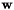, 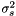 (the kernel hyperparameter will be discussed in Section learnker). Thus, the options are:
- "sGaussianProcess": a standard Gaussian process where the hyperparameters are known.
- "sGaussianProcessML": a standard Gaussian process where the hyperparameters are estimated directly from data using maximum likelihood estimates.
- "sGaussianProcessNormal": a Gaussian process with a Normal prior on the mean function parameters and known .
- "sStudentTProcessJef": in this case we use the Jeffreys prior for and . This is a kind of uninformative prior which is invariant to reparametrizations. Once we set a prior on the posterior becomes a Student's t Process.
- "sStudentTProcessNIG": in this case we standard conjugate priors, that is, a Normal prior on and a Inverse Gamma on . Therefore, the posterior is again a Student's t process.
Gaussian processes are a very general model that can achieve good performance with a reasonable computational cost. However, Student's t processes, thanks to the hierarchical structure of priors, provide an even more general setup for a minor extra cost. Furthermore, the Student's t distribution is robust to outliers and heavy tails in the data.
Kernel (covariance) models
One of the critical components of Gaussian and Student's t processes is the definition of the kernel function, which defines the correlation between points in the input space. As a correlation function, the kernel must satisfy a set of properties (e.g.: being positive definite). All the kernel models available and its combinations satisfy the kernel restrictions.
The functions with "ISO" in their name are isotropic function, that is, they share a single set of parameters for all the dimensions of the input space.
The functions with "ARD" in their name use Automatic Relevance Determination, that is, they use independent parameters for every dimension of the problem. Therefore, they can be use to find the relevance of the each feature in the input space. In the limit, this can be used for feature selection.
Atomic kernels
- "kConst": a simple constant function.
- "kLinear", "kLinearARD": a linear function.
- "kMaternISO1", "kMaternISO3","kMaternISO5","kMaternARD1","kMaternARD3","kMaternARD5": Matern kernel functions. The number divided by 2 represents the order of the function. See [Rasmussen:2006] for a description.
- "kPolyX": Polynomial kernel function. X is a number 1-6 which represents the exponent of the function.
- "kSEARD","kSEISO": Squared exponential kernel, also known as Gaussian kernel.
- "kRQISO": Rational quadratic kernel, also known as Student's t kernel.
Binary kernels
This kernels allow to combine some of the previous kernels.
- "kSum": Sum of kernels.
- "kProd": Product of kernels.
Note that the binary kernels only admits two terms. However, we can combine them for more complex operations. For example if we write:
"kSum(kMaternISO3,kSum(kRQISO,kProd(kPoly4,kConst))"
it represents the expresion: Matern(3) + RationalQuadratic + C*Polynomial^4
In this case, the vector of parameters is splited from left to right: 1 for the Matern function, 2 for the RQ function, 2 for polynomial function and 1 for the constant. If the vector of parameters have more or less than 6 elements, the system complains.
Parametric (mean) functions
Although the nonparametric process is able to model a large amount of funtions, we can model the expected value of the nonparametric process as a parametric function. This parametric model will help to capture large offsets and global trends.
The usage is analogous to the kernel functions.
- "mZero","mOne","mConst": constant functions. For simplicity and because they are largely used, we provide special cases f(x) = 0 and f(x) = 1.
- "mLinear": linear function.
- "mSum": binary function which can be used to combine other functions.
Selection criteria
As discussed in Introduction to Bayesian Optimization, one of the critical aspects for Bayesian optimization is the decision (loss) function. Unfortunately, the functions described there are unavailable, because they assume knowledge of the optimal value . However, we can define proxies for those functions.
Some criteria, such as the expected improvement and the lower confidence bound admits an annealed version "cXXXa". In that version, the parameter that is used to trade off exploration and exploitation changes over time to priorize exploration at the begining and exploitation at the end.
Many criteria depends on the prediction function, which can be a Gaussian or a Student's t distribution, depending on the surrogate model. However, the library includes all the criteria for both distributions, and the system automatically selected the correct one.
Atomic criteria
- "cEI","cBEI","cEIa": The most extended and reliable algorithm is the Expected Improvement algorithm [Mockus78]. In this case we provide the general version from [Schonlau98] which includes an exponent to trade off exploration and exploitation "cEI". For an annealed version of the exploration/exploitation trade off, use "cEIa". Whe also includes a variation from [Mockus1989] which add a bias or threshold to the improvement "cBEI".
- "cLCB", "cLCBa": Another popular algorithm is the Lower Confidence Bound (LCB), or UCB in case of maximization. Introduced by [cox1992statistical] as Sequential Design for Optimization (SDO). Analogously, "cLCBa" represents an annealed version of the exploration/exploitation trade off.
- "cMI": A generalized version of the LCB criterion which relies on the mutual information. See [Contal2014]
- "cPOI": Probability of improvement, by [Kushner:1964]
- "cExpReturn","cThompsonSampling","cOptimisticSampling": This criteria are related with the predicted return of the function. The first one is literally the expected return of the function (mean value). The second one is based on the Thompson sampling (drawing a random sample from the predicted distribution). Finally, the optimistic sampling takes the minimum of the other two (mean vs random).
- "cAopt": This is based on the A-optimality criteria. It is the predicted variance at the query point. Thus, this criteria is intended for exploration of the input space, not for optimization.
- "cDistance": This criteria adds a cost to a query point based on the distance with respect to the previous evaluation. Combined with other criteria functions, it might provide a more realistic setup for certain applications [Marchant2012]
Combined criteria
- "cSum","cProd": Sum and product of different criteria functions.
- "cHedge", "cHedgeRandom": Bandit based selection of the best criteria based on the GP-Hedge algorithm [Hoffman2011]. It automatically learns based on the behaviour of the criteria during the optimization process. The original version "cHedge" uses the maximum expected return as a reward for each criteria. We add a variant "cHedgeRandom" where the reward is defined in terms of Thompson sampling.
In this case, the combined criteria admits more that two functions. For example:
"cHedge(cSum(cEI,cDistance),cLCB,cPOI,cOptimisticSampling)"
Methods for learning the kernel parameters
The posterior distribution of the model, which is necessary to compute the criterion function, cannot be computed in closed form if the kernel hyperparameters are unknown. Thus, we need a find to approximate this posterior distribution conditional on the kernel hyperparameters.
First, we need to consider if we are going to use a full Bayesian approach or an empirical Bayesian approach. The first one, computes the full posterior distribution by propagation of the uncertainty of each element and hyperparameter to the posterior. In this case, it can be done by discretization of the hyperparameter space or by using MCMC (not yet implemented). In theory, it is more precise but the computation burden can be orders of magnitude higher. The empirical approach on the other hand computes a point estimate of the hyperparameters based on some score function and use it as a "true" value. Although the uncertainty estimation in this case might not be as accurate as the full Bayesian, the computation overhead is minimal.
For the score function, we need to find the likelihood function of the observed data for the parameters. Depending on the model, this function will be a multivariate Gaussian distribution or multivariate t distribution. In general, we present the likelihood as a log-likelihood function up to a constant factor, that is, we remove the terms independent of  from the log likelihood. In practice, whether we use a point estimate (maximum score) or full Bayes MCMC/discrete posterior, the constant factor is not needed.
from the log likelihood. In practice, whether we use a point estimate (maximum score) or full Bayes MCMC/discrete posterior, the constant factor is not needed.
We are going to consider the following score functions to learn the kernel hyperparameters:
- Leave one out cross-validation (SC_LOOCV): In this case, we try to maximize the average predicted log probability by the leave one out (LOO) cross-validation strategy. This is sometimes called a pseudo-likelihood.
- Maximum Total Likelihood (SC_MTL) For any of the models presented, one approach to learn the hyperparameters is to maximize the likelihood of all the parameters , and . Then, the likelihood function is a multivariate Gaussian distribution. We can obtain a better estimate if we adjust the number of degrees of freedom, this is called restricted maximum likelihood. The library automatically selects the restricted version, if it is suitable.
- Posterior maximum likelihood (SC_ML): In this case, the likelihood function is modified to consider the posterior estimate of 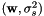 based on the different cases defined in Section surrmods. In this case, the function will be a multivariate Gaussian or t distribution, depending on the kind of prior used for .
- Maximum a posteriori (SC_MAP): We can modify the previous algorithms by adding a prior distribution 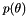. By default, we add a joint normal prior on all the kernel hyperparameters. However, if the variance of the prior hp_std is invalid (<=0), then we assume a flat prior on that hyperparameter. Since we assume that the hyperparameters are independent, we can apply priors selectively only to a small set.
Initial design methods
In order to build a suitable surrogate function, we a need a preliminar set of samples. In Bayesian optimization this is typically performed using alternative experimental design criteria. In this first step, usually the main criteria is space filling. Thus, we have implemented the subsequent designs:
- Latin hypercube sampling: Each dimension of the space is divided in several intervals. Samples are then taken according to a generalization of the Latin square scheme. http://en.wikipedia.org/wiki/Latin_hypercube_sampling
- Sobol sequences: It is a set of quasi-random low-discrepancy sequences. Thus the space is sampled more evenly than with uniform sampling. http://en.wikipedia.org/wiki/Sobol_sequence
- Uniform sampling: The search space is sampled uniformly.
Note: Since we do not assume any struture in the set of discrete points during discrete optimization, only uniform sampling of the discrete set is available in that case.